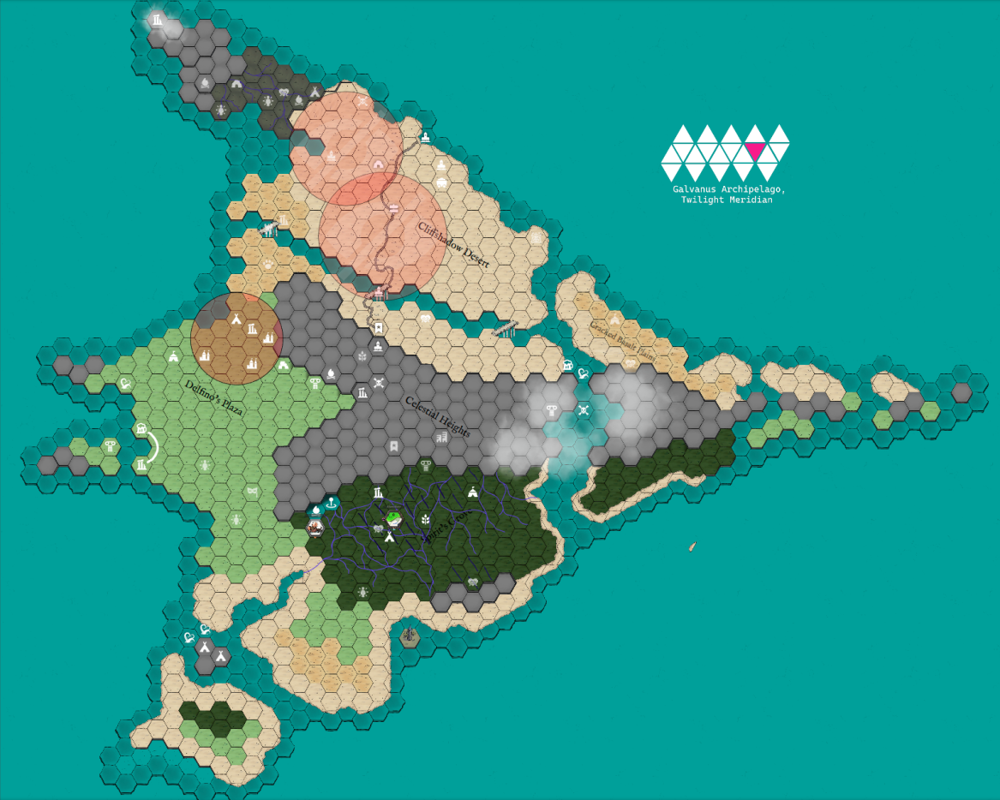

Kicking off session reports without any campaign context, nearly 40 sessions in, seems like poor storytelling but, ah, maybe I’ll explain in time. Regardless, here is a session report for our 38th episode of BREAK!!: The Wandering Trio.
Background:
The campaign takes place on a small island called the Skyray Isle within the Galvanus Archipelago in the Twilight Meridian, set in the standard time period of the post-apocalyptic 4th Aeon. The island itself was once a prosperous export trading hub in the form of uncovered Gleysian artifacts from ruins in the island but has fallen into a period of stagnation/economic issues ever since the Water Spirits began sinking ships out of nowhere. As it stands now in the 38th episode, the Water Spirit issue was resolved amicably by returning the Great Spirit’s kidnapped child back to them…but at a cost. The party had to travel into an Elsewhere named the Gardens of Ynn to stop an antagonist from sacrificing the child and killing off the Spirits (the antagonist of this arc went the ‘aggressive solution’ route).
Unfortunately for both the arc’s antagonist and the party, the entire thread was a ruse to get mortals to open a portal to the Garden and step through such that the Idea of Thorns, a once-banished Divine Ruler of the 2nd Aeon, could hitch a ride back to the Outer World and reconnect with its physical body. But hey, the party solved one issue at least.
Confused yet? I still am and I’m helming this ship. Here’s a map: 
Characters:
The characters are currently Rank 7 with an XP total of 94 out of 96 to hit Rank 8. The XP system in BREAK!! is by hours played (I’ve found I really like this system) and some bonus XP for goals completed so I knew it was this session they were levelling up. It just so happened to coincide with a very scary boss encounter so that was nice timing.
The (to-be-determined) heroes of our campaign are as follows:
- Abra Baal (Goblin Sage): This little rat fuck is a whimsical Goblin Sage through-and-through, and has gone for a very offensive-focused build consisting of “the plague” (Hocus Pox) and bombs (Eldritch Explosive). Abra is a young Goblin who was taken in by the renowned Artificer/Sage, Taam Baal, of the Celestial Bazaar, and who started the campaign by setting out on a task on his own for the first time. He is a very abrasive individual on the outside but follows the teachings and mannerisms of his teacher/father figure well. He (meaning the player) is great at creative interpretations of the Sage Abilities and keeping me sweating.
- Gackitorious “Gack” Maximus (Factotum Promethean): Gack hails from the twisting tunnels of the Buried Kingdom and went to the surface searching for meaning. It was a strange existence being an 8ft tall Promethean in an underground war of Goblins and Dwarves. He signed up for a doomed research expedition to Skyray Isle where the spirits sunk his vessel and he was, to his knowledge, the sole survivor. Gack is very much a dudebro desperate for a good image in his party and will just make up impressive stuff constantly. Saying that, he is genuinely useful as the party’s healer (Healing Hands) and negotiator (Silver Tongue). His Factotum’s pack is just a bunch of washed-up luggage strapped together, which lends itself well to his Always Prepared Quirk.
- Lookus ‘Stink’ Eyes (Rai-Neko Murder Princess): Lookus was a street urchin within the Celestial Bazaar who was taken in by Golden ‘Anubis’ Eyes of the Seeing Eyes Clan, a trade-protection clan of the Bazaar ensuring deals are fair (think cat yakuza). He has grown up in the Bazaar (alongside Abra due to Anubis and Taam working together often) and became a scout for the Clan. At the start of the campaign, he was given the orders to bodyguard Abra on his trip at the request of Taam. Very into fashion, and now owns a tailor shop within the Bazaar (after murdering the previous owner, the antagonist described earlier). Trying to grapple with anger and wrath as a means to protect others.
- Kadabra (Bumpo): The pack-mule Bumpo of the party, and Abra’s best friend. At the start of the campaign, they were a conduit for the Idea of Thorns and would often speak in whispers to Abra as a “caring friend”, teaching him magic and forbidden knowledge. Once the party returned from the Gardens, however, the Idea jumped ship from Kadabra to possess Abra’s father Taam. So Kadabra’s a normal chill Bumpo now, which has been nice.
- Dirt (Moth Skree): Dirt is the speaking animal companion of Gack (Boon Companion) and grew up with him in the Buried Kingdom. Going through a bit of an angsty teen phase. Loves noir smoking, has a bomb drive-by combo move with Abra, and has snarky quips. Often attended classes in place of Gack at his community college.
Session
The players are making their way into the isle’s southern jungle, the Spirit’s Grove, seeking Taam’s old adventuring partner, Elix of the Old Grove. Elix is a powerful druid that tends to the Evergrove, spiritual center of the jungle. They’re hoping for answers about the Idea of Thorns and to follow up on Taam’s last words before possession of “find Elix before…!”. Classic stuff.
2 episodes prior, they descended into the jungle and followed the rivers to Roost, a monastery village of Stiltkin that have been trying to fight the jungle’s growing corruption. The party saw the pitiful state of the monastery and teamed up with the angry Whispering Wind, a Stiltkin ranger, who was willing to act as a Guide to Evergrove if they helped fight the corruption directly. The other monks decided to hunker down and protect what they could after the loss of half their order. Roost and the Spirit’s Grove are very much taken/inspired from the awesome in-progress book the Swamp of Souls - please go check it out!
From Calm Rudder, a local merchant, the party bought a river map that pointed out rivers and known corrupted zones, as well as some information about the local settlements in the area. On account of the Petrifrogs in the jungle (pictured above) they also bought some Putrefication and Petrification antidotes. They then set off as quick as they arrived.
The first 2 days of hex travel went well; they made their checks and had no encounters. Normally BREAK!! uses point-crawl-esque mechanics of Journeying and I think they’re great! But, I wanted to try transforming them into a hexcrawl-style of play and it has worked out really well. The Group Formation and Trailblazing mechanics transfer perfectly, and I’m able to simply translate movement to hexes where they can travel 2 hexes per day here. Getting Lost means I remove their token from the map until they reorient themselves somehow, and Missteps just means 1 hex instead of 2.
On the third day, Whispering Wind convinced the party to cut through the corrupted zones of the Grove for expediency, claiming she could guide them through it just fine and cut days off the travel. No questions asked despite red flags, they agreed and turned into “the dark”. Things were quickly found to be amiss, however, when they made a sudden turn, Wind took off into the trees, and they splashed down into an ominously crimson glowing site of some corrupted druidic stone. There stood a Blightheart named Urarani (reskinned from the book but the name is great), a 20ft large mass of shadow and Stiltkin skeletons held together by a souljar stuck within its head. Of course no Negotiation available for this one, given the whole monster corruption ‘n all that.
Fight Structure: I found a perfect Czepeku map for this and set it up with some Isolated but high up Zones to reach Urarani’s head. I wanted this to be a deadly encounter so I buffed Urarani to be able to take 2 Attack Actions per Turn rather than just an Attack Action and Colossal Action. Turns out, pretty deadly.
To spice it up from just being a straight blow-for-blow slog, I added in a timed mechanic with the Corrupted Orb at the top of the map: every 3 Rounds I’d roll on a table to check what the Orb does. This was certainly a TPK (or Retreat) scenario if not taken care of quick. Per BREAK!! Rules, I gave the Orb 14 Hearts with a DR of 16 so this with Urarani was a brutal challenge to tackle.
Orb Table:
- 1: Nothing!
- 2: Corrupting Totem [4 Hearts/DR 12] (Causes all Areas to become Suffocating)
- 3: 2x Toxiknight
- 4: 1x Fungal Knight
- 5: 1x Rosehound
- 6: Appearance from Skippi (an NPC that terrifies the Players)
Music: I tried out a playlist mix of Xenoblade Chronicles, Monster Hunter, Nier, and FFXIV tracks. It balanced out pretty well and got compliments from the players. Would recommend.
Notable Fight Things: As said prior, the goblin rat loves bombs and immediately clocked that the Orb on the map meant something without me saying anything yet. He planted the bomb Turn 1 and took away 8 Hearts off-rip.
The Orb was dealt with within 4 Rounds through a combination of Grenades and Gack’s character background being a rock smasher from the Buried Kingdom, naturally having a literal rock mallet as his weapon. To finish it off, Abra Shadow Puppeted his own teammate Gack to let him swing against it again. I don’t think this was quite RAW for Shadow Puppet but it was fun and cool. Implications of this I’ll, uh, deal with later. The fight’s only Orb roll on Round 3 was a very lucky 1.
At one point I got to use Urarani’s area-wide Restraining Ability against all of them when they huddled up, much to my enjoyment. They got super lucky on their Might rolls to all escape.
As for Whispering Wind, I had her join the fight a few Rounds in against Urarani. She has a personal vendetta against the creature for killing her sister and was using the characters as “forced help”. The party never got to learn why Wind betrayed them or about the personal vendetta, however, as my “who the monster targets” dice rolls decided Wind should become a smushed corpse in only a handful of Rounds. 3 Hearts, 3 Hearts, Shocked, Near Death, 1 Final Blow does it.
Overall it was a bloodbath and will be a very memorable combat - that simple 2 Attack buff was quite potent. There were some awesome use of Abilities by the characters to help each other out. One example: Lookus broke his arm for the 6th time this campaign and thus couldn’t use his Large Mechanical Missile Weapon. Abra used Prestidigitonium on the weapon to help Lookus aim it without penalty.
Combat Results:
- Whispering Wind: DEAD.
- Abra: This rat has a DR of 18 and a Shield so he’s fine, as he always is.
- Lookus: Broken arm…again. Immediately fixed by Gack’s Healing Hands…again.
- Gack: A severed left leg! He’s been trying to convince the party that Promethean limbs grow back this whole campaign, and he will finally get to show them.
Conclusion
We ended the session there and I’ve got to figure out what loot to reward them with. Thinking to homebrew some cool Additives and maybe an ancient druidic artifact in the ruins. They ranked up to Rank 8 and all of them are having decision paralysis on their next Ability.
They are fairly close to Evergrove itself by this point but with a broken party and no Guide, we’ll see how they fare in the jungle on the next episode. If you actually read this in its entirety, then damn thanks and I hope you enjoyed!
Comments